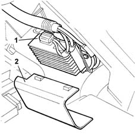

DESCRIPTION OF COMPONENTS
- Path
- Descriptions > 10 ENGINE > 1088 ENGINE COOLING > 1088E COOLANT TEMPERATURE CONTROL DEVICES > DESCRIPTION OF COMPONENTS
- Kind
- system description
- Applies to
- engines: 3.0 V6, 3.2 V6; all production periods
- Interactive page
- https://sloeber94.github.io/elrnDB-lThss/en/#/617611
Applies to: engines: 3.0 V6, 3.2 V6; all production periods
FAN
Specifications
Function
The two-speed cooling fan increases the heat dissipation capacity of the radiator and/or air conditioning condenser.
They are driven directly by the injection control unit on the basis of a specific operating strategy [DF 1056].
Fan control
According to coolant temperature and coolant pressure in the air conditioning system, the engine control node communicates with the fan control interface to provide enablement for:
- fan activation at first or second speeds.

- 1 - Engine coolant temperature multifunction control unit
- 2 - Multifunction control unit cover
Engine coolant temperature control
The engine control node with coolant temperature higher than 105° C.:
- reduces injected fuel quantity (reduces engine power)
- controls the cooling fans via the fan control interface
- turns on the coolant warning light on the instrument panel.